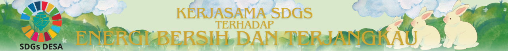

Dampak peningkatan akses terhadap energi bersih dan terjangkau akan memperbaiki kualitas hidup bagi masyarakat Indonesia, terutama bagi masyarakat di daerah terpencil akan membantu dan memungkinkan masyarakat untuk memiliki akses yang lebih baik dari pendidikan, kesehatan maupun peluang ekonomi. Energi yang terjangkau ini juga dapat mengurangi beban pengeluaran rumah tangga / ekonomi yang sebelumnya dialokasikan untuk bahan bakar fosil, sehingga masyarakat dapat menginvestasikan lebih banyak sumber daya untuk kebutuhan lainnya. Selain itu dengan menggantikan bahan bakar tradisional yang mencemari udara seperti kayu bakar atau batubara akan bertransisi ke energi terbarukan akan mengurangi polusi udara yang berdampak positif terhadap kesehatan masyarakat.